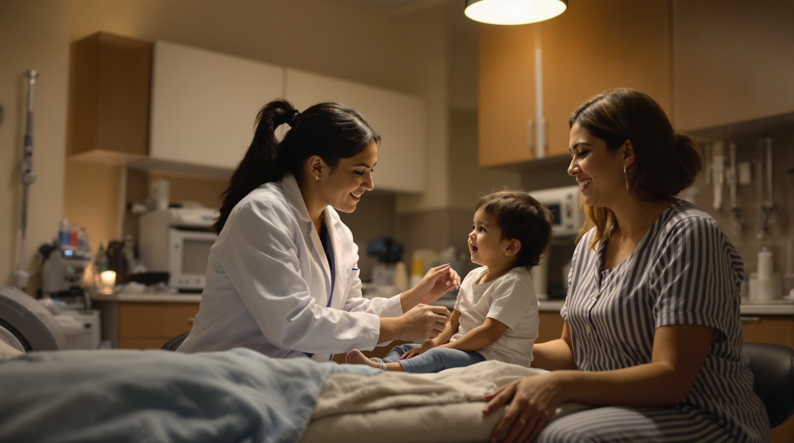
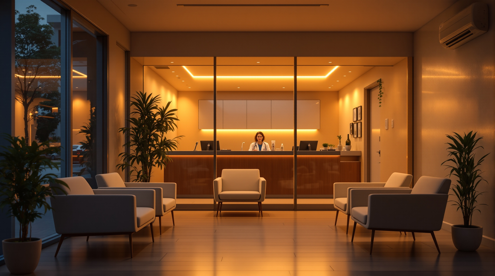

Urgent Care Pharr Tx

```markdown
title: "Urgent Care in Pharr, TX — Open Nights & Weekends | Optimum Health & Wellness Clinic" meta_description: "Need urgent care in Pharr, TX tonight? Optimum Health & Wellness is open late, no insurance needed. Walk in at 3912 N Jackson Rd — serving all of RGV." keyword: "urgent care pharr tx" content_type: "Service Page" date: 2026-03-18 business: optimum_clinic
When your child spikes a fever at 9 PM, or you've been ignoring that deep cut all day because you couldn't leave work, the last thing you need is a locked clinic door. If you're searching for urgent care in Pharr, TX right now, you've found the right place. Optimum Health & Wellness Clinic at 3912 N Jackson Rd, Pharr, TX 78577 is a walk-in night clinic built specifically for RGV families who need real medical care — tonight, not tomorrow morning.
No appointment. No insurance required. Walk in now at 3912 N Jackson Rd — we're open and ready to see you.
Why RGV Families Choose Optimum Health & Wellness for Urgent Care in Pharr, TX
The Rio Grande Valley has a healthcare access problem. Most primary care offices close by 5 PM. The nearest emergency rooms come with 3–5 hour waits and bills that can top $2,200 or more for a basic visit. That leaves working families in McAllen, Edinburg, Mission, San Juan, Alamo, and Pharr in an impossible spot every single evening.
We built Optimum Health & Wellness to fill exactly that gap.
We are a cash-pay clinic — meaning our pricing is transparent, predictable, and dramatically lower than an ER. You know what you're paying before you're treated. No surprise bills. No insurance maze. No being put on hold for 45 minutes while your kid cries in the backseat.
We serve the entire Rio Grande Valley, and our location on N Jackson Rd in Pharr puts us right in the heart of the community — easy to reach from Edinburg, McAllen, and San Juan.
> Ready to be seen tonight? Walk directly into 3912 N Jackson Rd, Pharr, TX 78577 — no appointment, no insurance required. Most visits are done in under an hour.
What We Treat — Conditions We See Every Night
Our providers are experienced in handling the full range of urgent (but non-life-threatening) medical needs that send people scrambling for help after hours. Here's what we commonly treat:
Illness & Infections
- Flu, COVID-19, and strep throat — with rapid test results in minutes
- Sinus infections, ear infections, pink eye
- Urinary tract infections (UTIs)
- Respiratory infections and bronchitis
- Stomach viruses and nausea
Injuries & Wounds
- Lacerations and cuts requiring cleaning or closure
- Sprains and minor fractures (X-ray evaluation)
- Burns, insect bites, rashes
- Sports injuries and work-related injuries
Chronic Condition Support
- Blood pressure checks and medication management
- Blood sugar monitoring for diabetes patients
- Prescription refills when you can't wait for your regular doctor
Other Common Needs
- Allergy flare-ups and asthma concerns
- Headaches and mild chest tightness (non-cardiac)
- Back pain and muscle strain
- School and sports physicals
If you're not sure whether we can help, walk in now at 3912 N Jackson Rd. Our team will be honest with you. If something is beyond our scope, we'll tell you immediately and guide you to the right level of care — because that's what a good neighbor does.
Skip the ER — Here's What the Cost Difference Looks Like
Let's be direct about something: the emergency room is not the right choice for most urgent medical situations. Not because the care is bad, but because the cost is disproportionate and the wait is long.
Here's a real comparison:
| Situation | ER (Estimated) | Optimum Clinic | |---|---|---| | Strep throat diagnosis + prescription | $800–$1,500 | Fraction of the cost | | Laceration cleaning & closure | $1,200–$2,500 | Walk-in cash price | | Flu rapid test + treatment visit | $600–$1,000 | Same-night, affordable | | UTI diagnosis + prescription | $700–$1,200 | Transparent flat rate |
When you pay out of pocket, every dollar matters. That's why we built our pricing model around the real budget of RGV families — not the inflated billing structures designed for insurance reimbursement.
Don't sit in an ER waiting room for four hours and pay four times more. Drive to 3912 N Jackson Rd, Pharr, TX 78577 and walk in tonight.

No Insurance? You're Welcome Here.
Nearly 1 in 3 adults in the Rio Grande Valley is uninsured or underinsured. That statistic represents real people — construction workers, restaurant employees, home caregivers, students, small business owners — who delay care because they don't know if they can afford it.
At Optimum Health & Wellness Clinic, the answer is always: you can afford to come in and find out.
We don't require insurance. We don't require a referral. We don't require a prior appointment. You walk in, you're seen, you're treated, and you leave with clarity — and usually a prescription in hand if you need one.
We believe quality medical care should never feel like a privilege. That's not just a marketing line. It's why we opened a night clinic in Pharr, TX instead of a standard 9-to-5 office.
If you've been putting off care because of cost, stop waiting. Walk in tonight at 3912 N Jackson Rd — no insurance needed, no judgment, just care.
We Speak Your Language — En Español También
Our clinic team is fully bilingual. Every interaction — from check-in to discharge — can happen in English or Spanish, whichever makes you feel more comfortable. For many of our patients, explaining symptoms clearly in their primary language makes the difference between a correct diagnosis and a missed one.
Aquí en Optimum Health & Wellness, usted puede hablar con nosotros en español desde el momento en que entra por la puerta. No hay barreras — solo atención médica de calidad cuando más la necesita.
Venga esta noche — estamos en 3912 N Jackson Rd, Pharr, TX 78577. Sin cita. Sin seguro médico requerido.
Serving All of the Rio Grande Valley From Our Pharr Location
Our clinic is located at 3912 N Jackson Rd, Pharr, TX 78577 — centrally positioned to serve patients across the entire RGV metro area, including:
- McAllen — just minutes away
- Edinburg — a straight shot down Highway 281
- Mission & Palmview — accessible via US-83
- San Juan & Alamo — close via N Jackson corridor
- Weslaco & Mercedes — a quick drive east on US-83
- Hidalgo & Sullivan City — we're the closer option tonight
Whether you live in Pharr or you're passing through from anywhere in the Valley, our doors are open and our team is ready. Drive to 3912 N Jackson Rd tonight — we'll have you in and out faster than any ER in the Valley.
What to Expect When You Walk In
We know the urgent care experience has burned people before — long waits, impersonal service, confusing bills. Here's exactly what to expect at Optimum:
1. Walk in at 3912 N Jackson Rd — No call ahead needed. No app to download. Pull up, walk through the door. 2. Quick check-in — We gather your basic info and chief complaint. Fast, no paperwork mountain. 3. Triage & vitals — A clinical team member sees you promptly. 4. Provider evaluation — Our licensed provider assesses you, orders any needed tests (rapid flu, COVID, strep, urinalysis, etc.), and discusses findings with you. 5. Treatment & prescription — You leave with a clear diagnosis, a treatment plan, and any necessary prescriptions sent to your pharmacy. 6. Transparent payment — You pay a straightforward cash price. No surprise bill in the mail three weeks later.
Most visits take under an hour from the moment you walk in.
Rapid Tests Available Tonight
One of the most common reasons people visit us after hours is because they need to know. Is this the flu or just a cold? Is this COVID? Is this strep?
We offer rapid diagnostic testing with results in minutes — not days:
- ✅ Rapid Flu A/B Test
- ✅ Rapid COVID-19 Test
- ✅ Rapid Strep Test
- ✅ Urinalysis (UTI)
- ✅ Blood glucose check
Knowing what you're dealing with changes everything — for your treatment, for your family's safety, and for your peace of mind.
Get your results tonight. Walk in now at 3912 N Jackson Rd, Pharr, TX 78577 — rapid tests available every evening, no appointment needed.
Walk In Tonight — No Appointment, No Insurance Needed.
You don't have to wait until morning. You don't have to sit in an ER for four hours. You don't have to figure out if your insurance covers it.
Optimum Health & Wellness Clinic is open tonight at 3912 N Jackson Rd, Pharr, TX 78577.
We're the urgent care in Pharr, TX that RGV families trust because we're here when no one else is — with real care, real prices, and real respect for you and your family.
Walk in tonight at 3912 N Jackson Rd. Not sure what to expect? Call ahead to confirm current wait times and we'll have you ready to go the moment you arrive. We'll take care of you.
📍 Walk in now: 3912 N Jackson Rd, Pharr, TX 78577 🕐 Open late — evenings and weekends 💵 Cash pay — no insurance required 🗣️ Fully bilingual staff — English & Spanish 📞 Call ahead to confirm wait times before you drive over
Optimum Health & Wellness Clinic is not an emergency room. If you are experiencing a life-threatening emergency such as chest pain, difficulty breathing, stroke symptoms, or severe trauma, please call 911 or go to your nearest emergency room immediately. ```
Optimum Health & Wellness Clinic
Walk in tonight — no appointment, no insurance needed.
Visit Optimum Health & Wellness Clinic